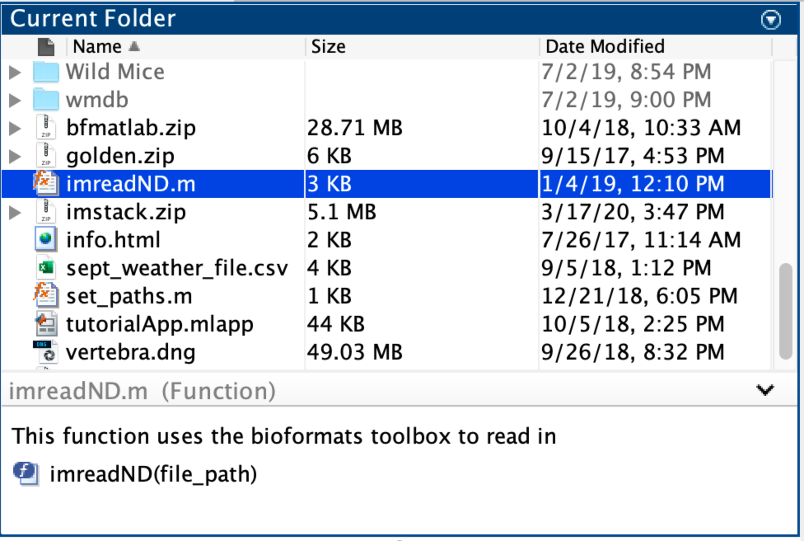
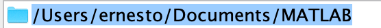
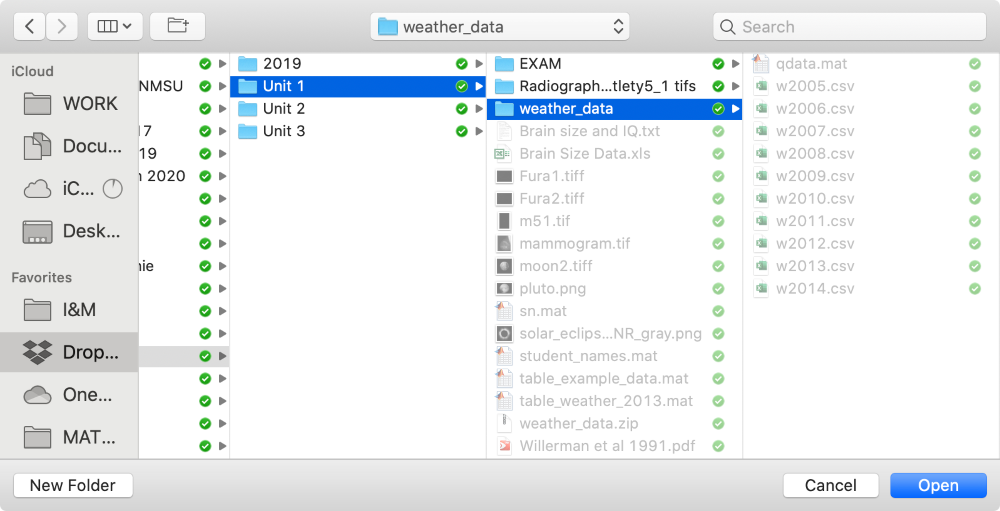
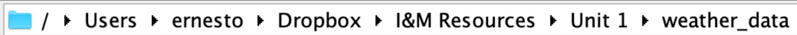

Files and Folders
how to find stuff on your computer
Overview
Often, you will need to import data into MATLAB and that data will often be stored in the form of a file somewhere on your computer. The good news is that MATLAB knows how to find and handle the files on your computer.
In this module, we will learn how to access files from MATLAB using path strings and built-in MATLAB dialog windows. Fortunately, path strings are little more than gussied up character arrays, so this should be relatively straightforward.
Terminology you should know
- Directory: a folder on your computer
- Path: a character array that contains the unique location of a file or folder on a computer
- File Separator: a character (usually a
\or/) that indicates a new folder in a path string - Wildcard character: a character that substitutes for any other character or character range in a path string. In MATLAB, this character is an asterisk (*).
Stuff you should know
After this module, you should be able to:
-
Discriminate between path strings from different operating systems based on the file separator used
-
Tell whether the path string points to a folder or to a file
-
Explain the difference between an "absolute" and a "relative" path
-
Create your own path strings, including paths to files and folders
-
Use all of the Functions listed in this module
Important Functions
- cd - change current folder
- dir - List folder contents
- fileparts - Parts of file name and path
- filesep - File separator for current platform
- fullfile - Builds a full path from path parts
- numel - number of array elements
- pwd - returns a path to the current folder
- uigetfile - Open File selection dialog box
- uigetdir - Open Folder selection dialog box
- userpath - returns the user path
- readtable - reads in data from a spreadsheet file
The MATLAB Current Folder
When you launch MATLAB, it automatically opens a folder on your hard drive. This folder is known as the "Current Folder" and there is a window in MATLAB (titled "Current Folder") that shows the contents of this folder.

Current Folder Path
You can find a representation of the location of the "Current Folder" on your hard drive just below the Ribbon Tool Strip in the Address field of MATLAB:
…Here, the address shows the location of the MATLAB folder on my computer, which is the default folder that MATLAB opens.
You can change the "Current Folder" by clicking on the "Browse for Folder" icon that is to the left of the address bar.
Directory vs Folder
In this module, we will be using the term "folder," when referring to folders on your computer. But the term "directory" is equivalent and often used interchangeably. So, if you start seeing a discussion of directories, that means folders…
Now You try: Review Current Folder
- Click on the Browse for Folder icon
- Select your Documents folder
- Review the address bar. You should see something like this:
- Review the contents of the "Current Folder". You should documents that look specific to your computer.
- Navigate back to the MATLAB folder (it should be in your documents folder).
The Path String
A path string is a character array that contains the unique location of a file or folder. This array represents a flattened directory tree hierarchy in which the outermost folder or drive is found on the far left of the array and the innermost folder or file is found on the far right of the array.
The function pwd returns the current folder path. This is the path that is displayed in the address bar.
| pwd returns the current path | |
|---|---|
…As you can see, the output path from pwd is a character array which represents the location of the current folder.
The function userpath returns the path of the default folder that MATLAB opens (a.k.a the user folder)
| Get default Current Folder | |
|---|---|
…this just happens to be the same path that is returned by pwd, because you haven't changed the current folder yet.
NOTE: Folder vs File paths
A path to a folder vs a path to a file look nearly identical. Both start with a series a folder names. The only way to differentiate between the two is to look at the last name in the string. If the name contains an extension (a period, followed by a series of characters, like .txt), then it is likely a file. If there is no extension, then it is likely a folder.
The File Separator
The file separator is the character that separates individual folder and file names in a path string. This character differs between MAC and PC.
You can use the function filesep to return the correct slash for your operating system:
Mac vs PC File separators
On a Mac (and unix), folders and files are separated by a forward slash (/'). On PCs, they are separated by a backward slash ("\\") and drives are indicated by a colon (:) or a double backward slash (\`).
Consider the following representation of a folder hierarchy:
In the above representation, the top name is the top folder and each folder below that is a folder inside the folder above it. So, in this example, the "MATLAB" folder is in the "Documents" folder, which is in the "ernesto" folder, which is in the "Users" folder.
To represent this hierarchy on a Mac you use a one-line character array (vector) and separate the folders using forward slashes:
This character array points to the MATLAB folder in the above tree hierarch which is found in the Documents folder, which is in the ernesto folder in the Users folder
On a PC, you use back slashes (\) as file separators, so a similar folder hierarchy on a PC might be saved as the following path string:
This above path points to the MATLAB folder in the Documents folder in the Ernesto folder in the Users folder on the C Drive.
Absolute vs Relative Paths
- An absolute path contains the full path information from the hard drive on down to the folder of interest. For example, the path
'/Users/ernesto/Documents/MATLAB'points to the folder "MATLAB", which is in the "Documents" folder, which is in the "ernesto" folder, which is in the "Users" folder, which is on the main hard drive or root folder (which is represented by the first file separator, '/'). You can use an absolute file path to find a file from anywhere on your computer. - A relative path is relative to the "Current Folder" in MATLAB. For example, in my MATLAB folder, there is a folder called "Wild Mice" (see above). A relative path to this folder would simply be
'Wild Mice'. In this case, MATLAB assumes the top folder to be the MATLAB folder. In side the "Wild Mice" folder is a folder called "wmdb". The relative path to this folder is'Wild Mice/wmdb.
It is usually best to use absolute paths, but sometimes relative paths are useful or even unavoidable.
Copying File Paths
One of the easiest ways to create a file path is to simply copy the path.
You can find the path to the "Current Folder" by clicking on the blue folder in the address bar:

This will convert the display to a string that is already conveniently highlighted and can be copied using standard PC operations (e.g. control-c)
Try It Now: Assign current folder path to a variable
Assign the Current the folder path to a new variable mycurrentfolder using the following steps:
- Copy the address from the address bar
- In the command window, create a variable called
mycurrentfolder - Assign to this variable the string you just copied. Don't forget the single quotes
You should enter something like this:
and get something like this:
… This is a path string, plain and simple. Notice that it is identical to the output frompwd.
Copying Paths from your computer
Both Mac and PC allow you to copy file paths to files using their system file browsers. You then simply paste the path as a character array in MATLAB and then assign to a variable, as we did above.
To do this:
-
In the Mac Finder, option-right-click on a file and select the menu item to capture item as a "pathname."
-
In the Windows File Explorer, shift-right-click on a file and select the "copy as path" menu-item
When creating file paths in MATLAB, don't forget that paths need to be character arrays, so they need be bracketed by single quotes:
Prompting Users to Select Files or Folders
When running code, you often need your file paths to be generated programmatically (not copied and pasted manually). This is especially important as different computers will have different folder names and hierarchies, and different operating systems use different file separators (forward vs backward slashes).
Luckily there are many different functions that you can use to generate these paths for you. One way to do this is to use the System File Browser to select and open a file on a computer.
In MATLAB, we use two main functions to bring up the file browser:
uigetdir: For selecting foldersuigetfile: For selecting files
Both functions work fairly similar in that they bring up the system file browser dialog, which allows the user to select a file or a folder. Once the User selects "OK", the function saves the name of the file or the folder and the path to separate variables.
Generating Folder paths using the File Browser
To get the path to a folder using the system file browser, we use the function uigetdir, as follows:
| Get Folder Path | |
|---|---|
After a call to uigetdir, you will get a file browser, like so:

…Notice that you are unable to select any files (here, all of the files are grayed-out).
If you choose a folder with the system browser and select "Open", then the function will assign the folder path to the indicated variable.
In this example, we selected the "weather_data" folder (it's highlighted in blue) and then we clicked on the "Open" button. After doing so, we get a result like this:
…The variable weather_folder contains the path to the folder that was selected. Notice that the appropriate file separators (forward slashes in this case) are incorporated into the path
Generating File paths using the File browser
If we want to generate a path to a file using the file browser, then we use the function
uigetfile.
Consider our "weather_data" folder again:
There are 10 *.csv files (1) in this 'weather_data' folder. We can use the function uigetfile to bring up the system file browser and prompt the user to navigate to this Weather Data folder and select one of the files.
 A
A *.csvfile is a spreadsheet format (comma separated values).
| Use uigetfile to Prompt user to select a file | |
|---|---|
This code will brings up the system specific file browser and allow the user to select a file. The input '*.csv' indicates that the dialog window should only display or highlight *.csv files. The asterisk in this string is a wildcard character that means "any file name". The output variables Filename and Pathname are assigned only after the user selects a file and clicks on open.
After we execute the uigetfile function, we get the system file browser dialog window:
If we select the "w2013.csv" file and then click on the "Open" button, the uigetfile function assigns the file name and path to the variables Filename and Pathname.
Filename =
'w2013.csv'
Pathname =
'/Users/ernesto/Documents/Unit 1/weather_data/'
…Notice that the function actually returns the path as two parts: the filename (replete with extension) and the folder path.
Warning: File not opened after uigetfile
After running uigetfile, the file itself is NOT opened. We are just collecting the filename and the path of the file as character arrays. To actually load the data from a file, you would need to run a function specific to the file type. For example, the function readtable reads spreadsheet files, while the function imread reads image files. Both of these functions take a file path as their input.
Note: The output from uigetfile is set to ZERO if you select Cancel. If you cancel the dialog box, the output variables (Filename and Pathname) will be set to ZERO. This is useful for control flow statements, as zeros resolve to a FALSE. For example, you could follow a uigetfile call with an IF ELSE statement, as follows:
| Using uigetfile outputs in in a control flow | |
|---|---|
Functions that Merge or Breakup Paths
Generating a Full File Path using fullfile
After we use uigetfile, we get the file path in two parts: the filename and the path to the file. How do we merge the data into a full path? One way might be to use our concatenating skills to concatenate the different strings. But you will have make sure to use the right file separators at the right locations.
An easier way to do to merge two pieces of information into a file path is to use the function fullfile. For example, we can take the outputs from uigetfile, Filename and Pathname, and stitch them into a proper full path, as follows
| Build-a-Path using fullfile | |
|---|---|
…Voila! full_file_path contains the full path to the 'w2013.csv' file with the proper file separators
Breaking down a Path for its parts
Sometimes you want to take a full path and break it down into the folder path and the file name.
The function fileparts does exactly this: it breaks down the path of a file into its "parts", such as the full folder path and the file name. This function accepts a path string as an input and returns the full path of the folder and the name of the file, as follows:
| Breaking down a full path | |
|---|---|
…The variable path contains the full path string to the folder while folder contains the name of the current folder.
Getting the extension part
Notice in the above example, that filename does not contain the extension. If you would like the extension, then you simply need to add another output to fileparts, as follows:
| Get the extension too | |
|---|---|
Getting just the folder name part
Remember, not all paths point to a file. A folder path just points to a folder. If you want the name of that folder, you can use fileparts as follows:
| Get Folder Name | |
|---|---|
…In this code, we input the function pwd, which returns the folder path to the current folder. In this example, this path is '/Users/ernesto/Documents/MATLAB'. So, fileparts returns the path to the folder containing the MATLAB folder ('folder_path') and the name of the current folder ('MATLAB')
Example: Using a Folder Name in a Control Flow Sequence
Getting just parts of a path string is useful for programmatic situations where you just need the folder or file name. Consider the following control flow statement, which tests whether the current directory is the MATLAB folder using the strcmp function
Functions that do Folder Stuff
Once you have identified a folder, and have its path, there are several functions that you can use to explore the contents of the folder.
Change the Current Folder (cd)
The function cd programmatically changes the current directory. The input is a folder path. In this example, we will use weather_folder, which we previous set to be '/Users/ernesto/Documents/Unit 1/weather_data'.
| Change Directory | |
|---|---|
…After executing this function, the current folder will now be 'weather_data'. You can check this result by inspecting the MATLAB address bar:

Getting information on a File
The function dir returns information on a file or on the contents of a folder.
To get information on a file, you input a file path, as follows
| Getting info on a file | |
|---|---|
contents =
name: 'w2013.csv'
date: '20-Jun-2015 15:18:28'
bytes: 3256
isdir: 0
datenum: 7.3614e+05
…Here the function dir returns a structure,contents, which contains information on the file 'w2013.csv'.
The structure array contents has 5 fields:
-
name - the name of the file
-
date - the modification date of the file
-
bytes - the size of the file
-
isdir - logical array that contains TRUE if the item is a folder
-
datenum - A Modification date as serial date number
dir knows the current folder
If the MATLAB current folder contains the file you want information about, then you can simply enter the name of the file. Since we already set the 'weather_data' folder as the current folder using the function cd, we can just input file name into dir, as follows::
To access the data in contents, you use dot notation as you normally would with a structure:
…Here we get the file name as a character array.
Getting Info on All Folder Content
Sometimes, you want information about all of the contents inside a folder. The function dir can do that too. Just input a folder path:
| Get Info on Folder content | |
|---|---|
Or, since we are already in the 'weather_data' folder, we can just enter the function name without an input:
Either way we get the following result:
…Notice that we get a 14X1 structure array. This means that the function dir found 14 items in the 'weather_data' folder. However, not everything it finds is an actual file.
Extracting data about a file or folder from the contents structure array
Since, the variable contents is simply a structure array, we can index it like we would any structure array.
For example, to return the fifth element in the structure array, you index as normal:
| Index the 5th element in the structure | |
|---|---|
…The result is a 1X1 structure array with details about the fifth file.
Similarly, to extract the name of the 6th file, you combine indexing and dot notation as follows:
| Index name of 6th file | |
|---|---|
…The result here is a character array (the content inside the name field in the 6th element of the structure array).
Extracting data across multiple elements in the contents structure
Sometimes, you need to get information across multiple elements in the structure array---like the names of the contents in the folder.
You're instinct might be to simply use dot notation, as follows
| Dot Notation of a Structure | |
|---|---|
…The problem with this approach is that you just get a comma-separated list, with the individual spit out one after the other.
Instead, it's usually better to concatenate this data into a cell array, using the following syntax:
| Concatenate content names in a cell array | |
|---|---|
This syntax concatenates the output into a cell array, transposes it, and then displays it in the command window, as follows:
ans =
{'.' }
{'..' }
{'.DS_Store' }
{'.MATLABDriveTag'}
{'w2005.csv' }
{'w2006.csv' }
{'w2007.csv' }
{'w2008.csv' }
{'w2009.csv' }
{'w2010.csv' }
{'w2011.csv' }
{'w2012.csv' }
{'w2013.csv' }
{'w2014.csv' }
Now that we can see all of the names of the content, notice that only the last 10 elements refer to an actual file (a .csv file). The rest of the elements are information on hidden files (files whose file names start with a period) and two navigation names: '.' and '..', which refer to the current directory and the directory above it, respectively (1).
- Don't worry about these navigation names too much. They are a confusing to use.
Using the Wildcard character in dir
Since we typically don't want to deal with directory navigation tools or hidden files, it is usually better practice to specify what information you want dir to return.
The simplest way to do this is to indicate the file extension for the files that you want dir to find. However, if you just entered '.csv' then dir would look for a file called '.csv', which would actually be a hidden file and you probably wouldn't get any results.
What you really want dir to search for is any file name then ends with a '.csv'. To do this, you use the asterisk in the file name.The function dir interprets the asterisk in a file name as a wildcard character. Whenever you include an asterisk, that means 'any character or characters'.
For example, to find all the files in the current folder that end with a .csv, use the following syntax.
| Get info on files with the .csv extenstion | |
|---|---|
Now we get a 10X1 structure array. This means that there are 10 files with the .csv extension in the "Current Folder". The function dir ignores all of the hidden files and directories
Loading Files
Up to this point, we have been just creating file paths, which are just character arrays that contain the location, or address, of a file on your comptuer. We have not actually loaded any of the data from that file into MATLAB.
To load the data, we need specialized functions that can handle the data. There are many different functions to load different types of data. But the two functions that we will use the most are:
readtable: For spreadsheet files — loads spreadsheet dataimread: For images — loads the image data
These functions typically take a file path as an input.
Example: Load a Spreadsheet File
In this example, we will load one of the '.csv' spreadsheet files from the weather folder that we have been exploring in this module. The function readtable reads in spreadsheet data and outputs a table variable. For an input, the function requires a file path to a spreadsheet file. To construct a full file path to one of the spreadsheet files, we will use fullfile to properly stitch together the path and file name. With the contents structure and the weather_data variable, we have all the information we need. We just need to pick one of the files, which we can do through indexing:
| Loading spreadsheet data into MATLAB | |
|---|---|
…Here, since we indexed the 3rd element of contents, we will read the 3rd file, which happens to be 'w2007.csv'.
Load Multiple files
Recall that the number of elements in the structure contents indicates the number of files found in the indicated folder.
If we want to read all of the spreadsheet files from the weather folder, we can greatly simplify the process using our old friend, the FOR LOOP:
…Let's unpack this syntax a little further
- In the first line, we create an empty table variable
T. We need to create this variable outside of the loop since we will be adding to it inside of the loop - We use
numelto count the number of elements in the structure arraycontent, which is equal to the number of .csv files inweather_folder. - In the initializing statement of the FOR LOOP, we create an array
nthat has same number of elements as there are files in the folder - On each iteration of the loop, we:
a) create a new file path to one of the spreadsheet files b) read in that spreadsheet file and then c) concatenate the results with the table
T
And we're done: a quick and easy way to read in all of the files from a selected folder. Note, this only works because the data in the spreadsheet files all have the same number of columns with the same column headers.
So, it is always a good idea when capturing data to organize it in a very consistent and precise fashion. Also notice that the table variable, T, incrementally grows in size with each call of the for loop. While this works satisfactorily for a small dataset, you run the risk of running into memory problems for very large datasets if you do not preallocate the table. Better coding practice would be to first preallocate the table variable with empty rows. For that, you would need to know how much data is in each file and plan accordingly.
END